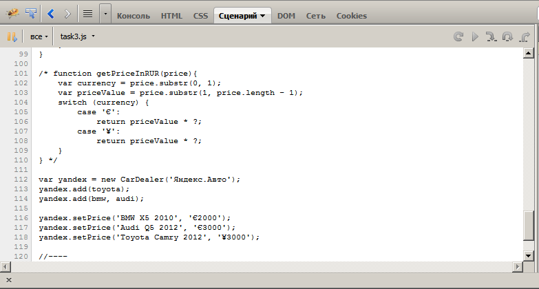

Использование инструментов отладки в Mozilla Firefox
Отладка
Отладочная консоль, изначально входящая в состав программы, позволяет только просматривать сообщения об ошибках и набирать инструкции в строке консоли. Включается после нажатия ctrl+shift+k либо из меню "Веб-разработка -> Веб-консоль". Там же можно включить "Простой редактор Javascript" (там можно составлять многострочный скрипт и выполнять его) и редактор стилей для импорта / редактирования css-стилей.
Для возможности отладки скриптов можно подключить сторонний плагин. Здесь я рассматриваю возможности отладки на примере FireBug. Его можно установить, открыв пункт меню "Уведомления" в основном меню, или здесь.
Кроме отладочной консоли, подобной стандартной, Firebug содержит вкладки со средствами для просмотра CSS, HTML, отладки скриптов ("Сценарий"), просмотра объектов DOM ("DOM"), диагностическую информацию о сети, просмотра Cookies ("Cookies").
Для целей отладки потребуется в основном вкладка "Сценарий":

Использование breakpoints
Здесь все стандартно: точка прерывания ставится для строки скрипта. Слева можно заметить, что все функционально значимые строки (содержимое которых задает инструкции, исключая лишь синтаксически значимые элементы типа фигурных скобок, сигнатур функций и др.) выделены зеленым.Справа на панели "Наблюдение" можно увидеть содержимое членов текущего блока кода (на изображении - класса Car) и их текущие значения.
Содержимое панели "Стек вызовов должно быть понятно из названия". Вот, например, содержимое этой панели для функции CarDealer.carsSort(), которая вызывается из CarDealer.list():
Панель "Точки останова" отображает список точек прерывания с указанием текущего блока (или имя js-файла), содержимое строки и номер строки:
На вкладке "Консоль" во время отладки можно просматривать информационные сообщения.